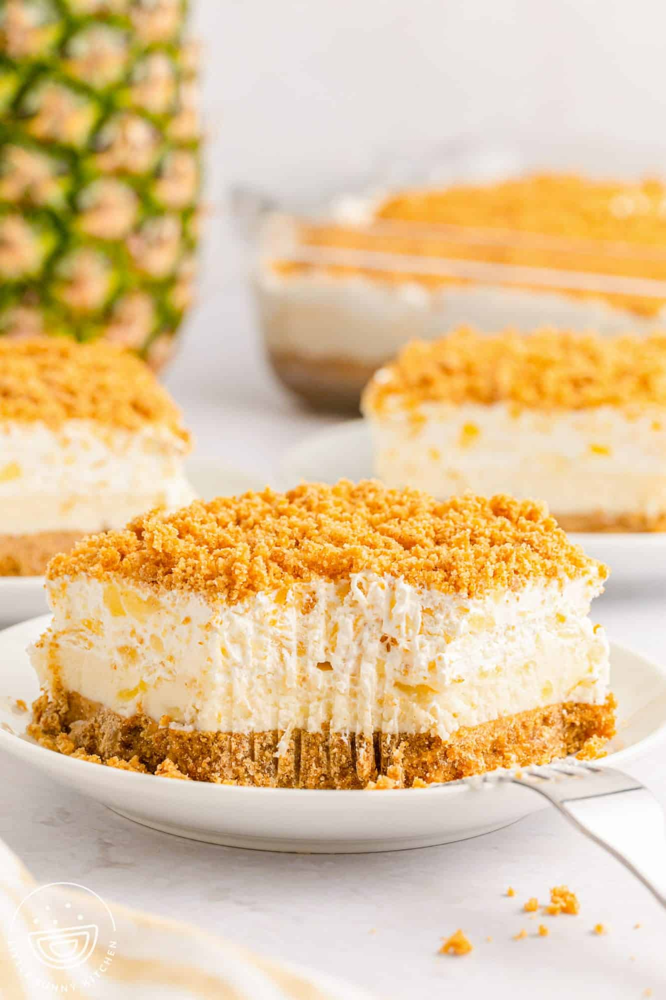

Pineapple Dream

Description
You know those desserts that seem to be at all the family gatherings? Those recipes that your grandma has been making for years? Yeah, this is that dish
This light and fluffy pineapple cream cheese dessert can be easily transported, hence it appearing at all those family functions, and rarely has leftovers.
Ingredients
- 2 1/2 cups graham crumbs (2 sleeves)
- 1/2 cup unsalted butter (for crust)
- 2 cups of powdered sugar, sifted
- 1/2 cup unsalted butter, softened (for filling)
- 4 oz cream cheese, softened
- 8 oz container Cool Whip
- 20 oz can crushed pineapple, drained well
Steps
- Preheat the oven to 300 F. Melt 1/2 cup butter in the microwave and let it cool. Combine the crumbs and butter, then press 2 cups of the crumb mixture firmly into a 9×9 square pan and bake for 8-10 minutes. Place on wire rack to cool.
- Beat the cream cheese and 1/2 cup butter together until creamy. Turn the mixer down to low and add the powdered sugar one cup at a time until incorporated. Turn up and beat well for a minute or so.
- Add a heaping tablespoon of the drained crushed pineapple and stir in with a rubber spatula.
- Spread the cream cheese and pineapple mixture over the crust.
- Fold the remaining pineapple into the Cool Whip and spread on top of the cream cheese mixture.
- Sprinkle the remaining graham cracker crumb mixture on top.
- Refrigerate for at least 4 hours, preferably overnight.